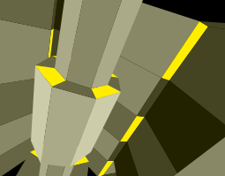

Code: PulkoMandy
Our entry to the ST-NICCC 2000 challenge, which is about displaying a 2D polygon animation on many different platforms. Not much technical merit in this version, and it comes late because, of course, getting things to work on Haiku was a challenge:
Code: PulkoMandy

GrafX2 is an old pixel painting program from the DOS era. The original authors, Sunset Design, stopped developping it and released the sourcecode into the wild. We did a port to modern systems and we are now adding some features to the program.
Will run on Haiku, Linux, Windows, and many other platforms. May be compiled on any platform with SDL available.
GrafX2 homepageCode : PulkoMandy & Cloudstrife
This is a set of tools for developping on MO5. It only fills the missing parts between other tools. So far it contains two tools :